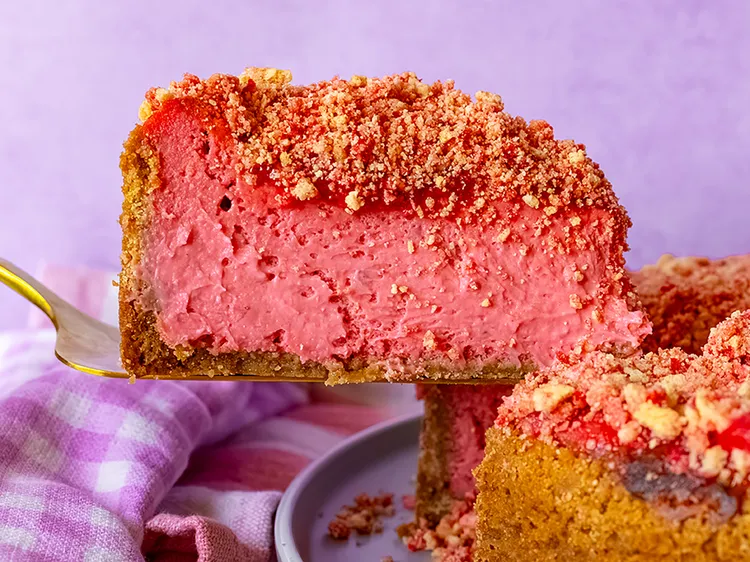

Common Recipes
Strawberry Crunch Cheesecake

This strawberry crunch cheesecake is a showstopping take on the nostalgic summertime ice cream bar, complete with a Golden Oreo crumb crust, strawberry-flavored filling, strawberry sauce, and a crunchy Golden Oreo topping. Freeze-dried strawberries bring even more berry flavor, and the overnight chill ensures every slice is perfectly set.
Ingredients
- 1 pound frozen unsweetened whole strawberries
- 3 tablespoons white sugar, or to taste
- 1 tablespoon lemon juice
- 1 1/2 tablespoons cornstarch
- 30 Golden Oreo® cookies
- 1/8 teaspoon salt
- 6 tablespoons unsalted butter, melted
- 3 (8 ounce) packages full fat cream cheese, at room temperature
- 1 cup white sugar
- 1/4 cup powdered freeze-dried strawberries
- 2 tablespoons lemon juice
- 1 tablespoon cornstarch
- 2 teaspoons lemon zest
- 1 1/2 teaspoons vanilla extract
- 1/2 teaspoon salt
- 3/4 cup heavy cream, at room temperature
- 2 to 3 drops red food coloring (optional)
- 3 large eggs, at room temperature
- 15 Golden Oreo® cookies
- 1/2 cup freeze-dried strawberries
- 2 tablespoons unsalted butter, melted
Steps
- For strawberry sauce, combine frozen strawberries and sugar in a large pot over medium heat. Cook until strawberries are soft, stirring often, 5 to 7 minutes. Mash strawberries with a potato masher. Taste strawberries for sweetness; if needed, add a little more sugar. Bring mixture to a gentle boil, and reduce heat to medium-low.
- Stir lemon juice and 1 1/2 tablespoons cornstarch together in a small bowl until dissolved. Add cornstarch mixture to strawberries, and stir to combine. Continue to cook strawberries over medium-low heat, stirring constantly, until thickened, 2 to 3 minutes. Remove from heat.
- Preheat the oven to 350 degrees F (180 degrees C). Grease a 9-inch springform pan and line the bottom with parchment.
- For crust, place 30 Golden Oreos into the bowl of a food processor. Pulse until finely ground. Add salt and melted butter; pulse until mixture is evenly moistened. Pour crust mixture into the prepared pan, and press firmly and evenly into bottom and 1 inch up sides of the pan. Place springform pan onto a baking sheet.
- Bake in the preheated oven for 10 minutes. Remove from the oven to cool while preparing filling. Leave the oven on.
- For filling, beat cream cheese, sugar, powdered freeze-dried strawberries, lemon juice, cornstarch, lemon zest, vanilla, and salt together in a large bowl with an electric mixer on medium speed until smooth and combined, 2 to 3 minutes. Add the 3/4 cup reserved strawberry sauce, heavy cream, and red food coloring; beat until smooth and combined. Add eggs 1 at a time, beating each until just incorporated. Pour batter into crust. Shake or gently tap the pan a few times to help batter settle evenly. Place pan back on to the baking sheet.
- Bake cheesecake in the preheated oven until filling is beginning to brown on the edges and the top begins to look matte, 65 to 75 minutes. Turn the oven off, and prop the door open slightly. Allow cheesecake to cool in the oven for 1 hour. Remove from the oven and refrigerate for at least 8 hours, or overnight.
- For topping, place 15 Golden Oreos into the bowl of a food processor. Pulse just a few times until mixture resembles coarse crumbs. Measure out 1/2 cup crumbs, pour into a bowl, and set aside. To the crumbs remaining in food processor, add 1/2 cup freeze-dried strawberries and pulse several times until more finely ground; stir this mixture into the bowl with crumbs to combine. Add melted butter; stir until evenly moistened. Cover bowl, and refrigerate until needed.
- When ready to serve, remove cheesecake from the pan, and place onto a serving platter. Spread the 1 cup reserved strawberry sauce evenly over the top of the cheesecake. Remove topping mixture from refrigerator, and break into smaller pieces as needed. Sprinkle as much or as little of the topping as you’d like over cheesecake top, and press down gently to adhere.
- Cut into slices. Store cheesecake in the refrigerator.